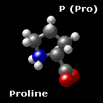
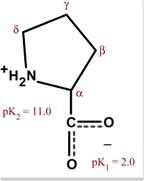

The Biology Project > Biochemistry > The Chemistry of Amino Acids
Cyclic Amino Acid
Proline is the only cyclic amino acid. It is nonpolar and shares many properties with the aliphatic group.
Proline is one of the ambivalent amino acids, meaning that it can be inside or outside of a protein molecule. Due to its unique structure, proline occurs in proteins frequently in turns or bends, which are often on the surface. The structure shown is of the amino acid in the ionization state that predominates at pH 7.0.
 
The Biology Project > Biochemistry > The Chemistry of Amino Acids
http://biology.arizona.edu
All contents copyright © 2003. All rights reserved.